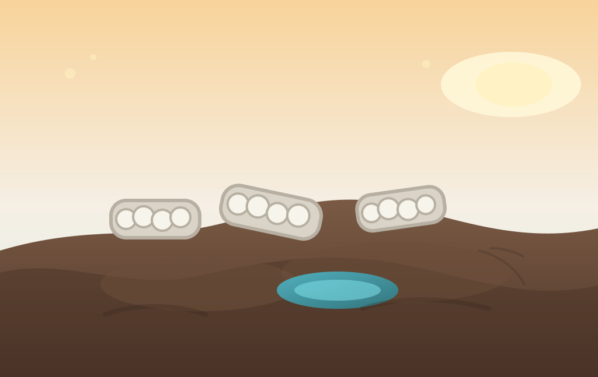

Villane lahendus turbamaadele

BBC kirjutab, et Põhja-Iirimaa Antrimi mägedes katsetatakse kohalikust villast tehtud palke, mis aitavad taastada kahjustatud turbamaid.
Praegu kasutatakse sarnastes töödes sageli imporditud kookoskiust palke, aga villane variant võiks pakkuda kohalikele lambakasvatajatele uut turgu ja vähendada imporditud materjali vajadust.
Turbamaad hoiavad süsinikku siis, kui nad on märjad ja terved; kuivades hakkavad nad lagunema ning muutuvad kliimale hoopis probleemiks. Seetõttu on igal väikesel erosioonipiduril päris suur tähendus — isegi siis, kui see näeb välja nagu midagi, mis muidu oleks lihtsalt laudas seina najal.
Lugu on hea meeldetuletus, et kliimalahendus ei pea alati olema kosmiline. Vahel piisab villast, natuke insenerimõistust ja väga väikesest soost, kes ei taha kuivaks saada.
Loe algallikat: BBC News – "A woolly solution to NI's peatland problems?"
selle artikli sisu sõnastatud AI poolt: (mudel gpt-5.4-mini)